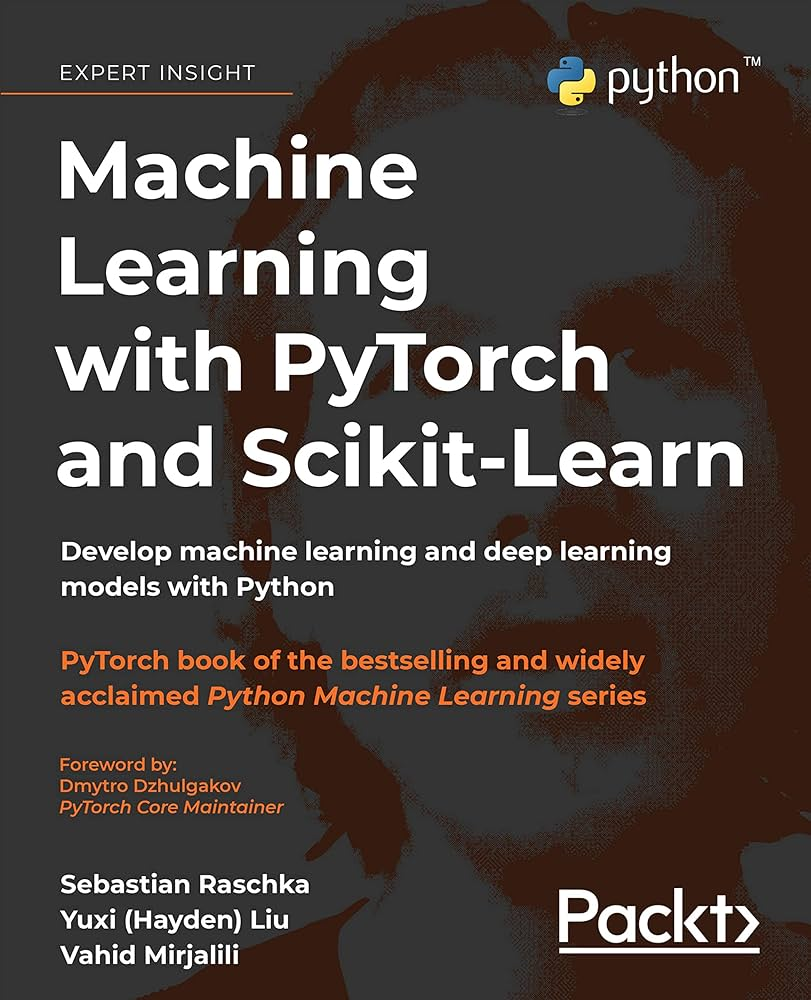
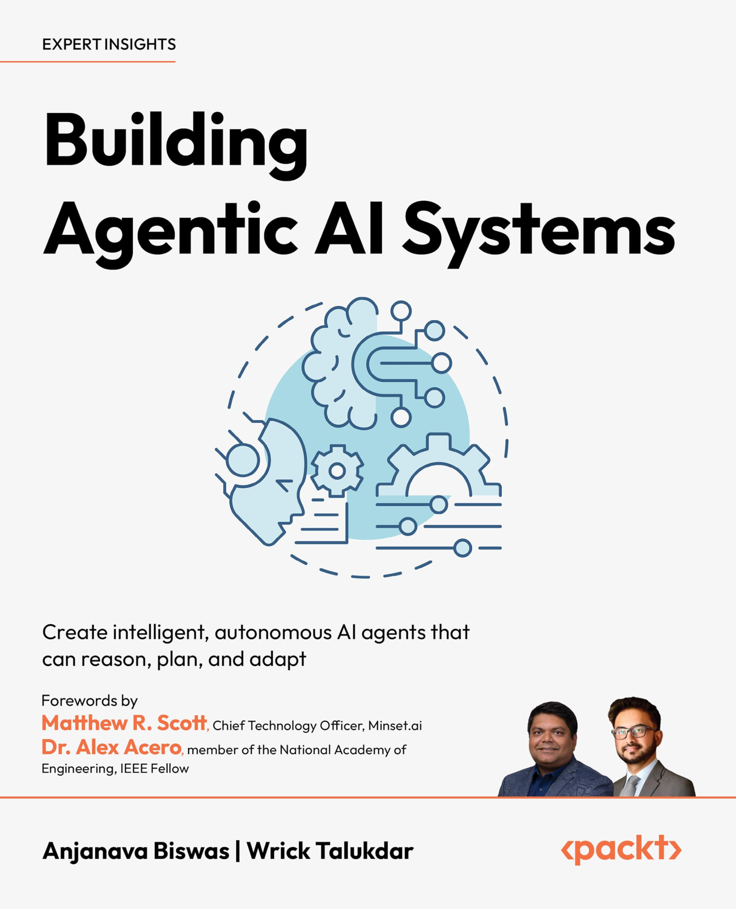

Introduction
There is a temptation in the AI space to skip the fundamentals. You learn to call an API, chain a few prompts together, and suddenly you are building a "production AI system." Except you are not. You are building a demo with production ambitions.
To be a strong AI engineer or ML engineer, you first need to be a solid software engineer. AI engineering is a specialization, not a separate discipline. It is software engineering applied to systems that use machine learning models.
The gap that matters is not between engineers who know LLMs and those who do not. It is between engineers who understand the systems around models and those who only understand the models themselves.
1. Python Crash Course
If you are new to Python or coming from another language, this is where you start. The book does not rush toward advanced topics. It builds loops, conditionals, functions, classes, and file handling in the right order.
Most bugs in data pipelines and ML preprocessing scripts come from unclear understanding of state, scope, and references. This book fixes that foundation.
Why it matters
- Exceptionally clear pacing with no assumed background.
- Project-based second half that reinforces fundamentals.
- Strong base for every later AI/ML system task.
2. Machine Learning with PyTorch and Scikit-Learn

This is the reference you should actually read, not only consult. It connects mathematical intuition and implementation, so you understand what optimization is doing and why model behavior changes.
In production, that depth matters. When validation shifts or performance degrades, the engineer who understands training dynamics can debug the system. Everyone else is guessing.
Why it matters
- Bridges theory and practice in one coherent flow.
- Covers classical ML and deep learning together.
- Focuses on evaluation quality, not only training loops.
3. Data Structures and Algorithms
AI bottlenecks are often not inside the model. They are around it: indexing, retrieval, state transitions, and heavy preprocessing paths.
Understanding complexity and data structures lets you detect hidden inefficiencies early, before they become production latency and cost problems.
Why it matters
- Retrieval systems depend on efficient indexing structures.
- Vector search relies on optimized nearest-neighbor logic.
- Large pipelines fail fast when complexity is ignored.
4. Building Intelligent AI Systems

At some point, the hard problem stops being model design and becomes orchestration design: tool calling, state transitions, and multi-step workflow reliability.
This book is for that stage. It focuses on architecture-level coordination where one model output triggers downstream actions, and correctness depends on the full system flow.
Why it matters
- Production-oriented coverage of agentic patterns.
- Practical orchestration strategies and pipeline design.
- Useful framing for failure modes and observability.
5. Clean Architecture
AI projects often start as small prototypes and expand quickly. Without structure, they become brittle and hard to change. Clean Architecture gives you principles for keeping domain logic stable while infrastructure evolves.
Good architecture is not elegance for its own sake. It is the reason teams can keep moving quickly six months later, even as providers, tools, and requirements change.
Why it matters
- Protects domain logic from provider and infrastructure coupling.
- Makes refactoring and testing safer under growth pressure.
- Improves team velocity over time.
Recommended Reading Order
- Python Crash Course
- Machine Learning with PyTorch and Scikit-Learn
- Data Structures and Algorithms
- Building Intelligent AI Systems
- Clean Architecture
The Goal Is Systems, Not Models
Being a strong AI engineer is not about chasing the latest model every month. It is about building reliable, efficient, maintainable systems that keep working under real traffic, evolving requirements, and team handoffs.
You do not become a good AI engineer by mastering AI alone. You become one by mastering software engineering, then specializing deliberately.